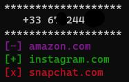

Ignorant : Numéros de téléphone
La machine virtuelle dispose d'une distribution Linux intégrée, qui vous permet d'utiliser des outils de recherche en sources ouvertes ou d'aide aux investigations.
Choisissez ci-dessous le type d'investigations que vous souhaitez mener et laissez-vous guider dans la création de la ligne de commande nécessaire.
Cette ligne de commande devra simplement être copiée/collée dans le terminal WSL.


Ignorant
Ignorant permet d'interroger un grand nombre de sites internet afin de vérifier s'ils disposent d'un compte utilisateur associé à un numéro de téléphone.
Entrez le numéro dans le champ suivant :
(Format : 33 601020304)
Le résultat obtenu se présente sous cette forme :
